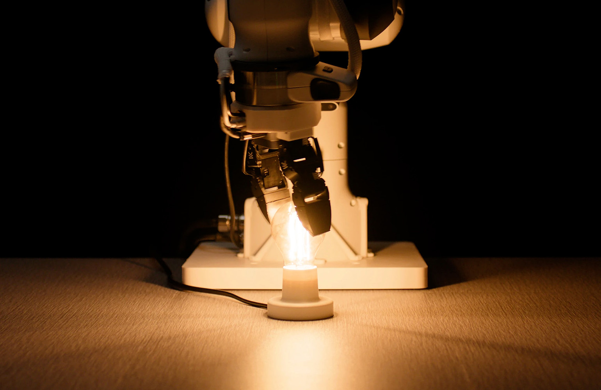

20 октября 2026 года Eka Robotics официально объявила о привлечении $150 млн в раунде Series A. Лидеры — фонды Andreessen Horowitz (a16z) и F-Prime (связан с Fidelity Investments), к раунду также присоединились Samsung Next, Obvious Ventures, E14 Fund и несколько стратегических инвесторов из списка Fortune 500. Оценка компании составила $1,45 млрд.
Вместо обучения роботов копировать движения людей по видео Eka делает ставку на vision-force-action (VFA) модель: робот одновременно зрением и силовой обратной связью оценивает взаимодействие с предметом — с каким усилием держать малину, до конца ли вставлен кабель, когда остановиться. Обучение идёт в симуляции методом подкрепляющего обучения в масштабе, по аналогии с AlphaZero, который когда-то превзошёл людей в го без единой человеческой партии. По словам компании, барьер переноса навыков из симуляции в реальный мир для чувствительных задач с касаниями начинает падать.
Обученные роботы берут предметы за пределами обучающей выборки со скоростью 1500 операций в час — примерно в два с половиной раза выше человеческой нормы около 600 операций в час. Та же рука вкручивает лампочку и вставляет провода. Журнал WIRED после демонстрации более ранней версии модели написал, что «когтевидный хват Eka ощущается как момент ChatGPT для физического мира».
Компания начинает с точного манипулирования — области, где через человеческие руки проходят триллионы долларов стоимости: от упаковки клубники до сборки серверных стоек с GPU. Ключевой тезис основателей: коммерческим заказчикам нужны одновременно производительность (скорость и точность) и универсальность; раньше роботы жертвовали одним ради другого. VFA обещает обе стороны сразу, а значит — путь к промышленному тиражированию, а не лабораторным демо.
Среди основателей — известные исследователи машинного обучения Пулкет Агарвал и Туомас Ляяня, так что интерес a16z к проекту неудивителен: это ставка на «физический ИИ», где следующим после языковых моделей фронтиром станет работа руками.